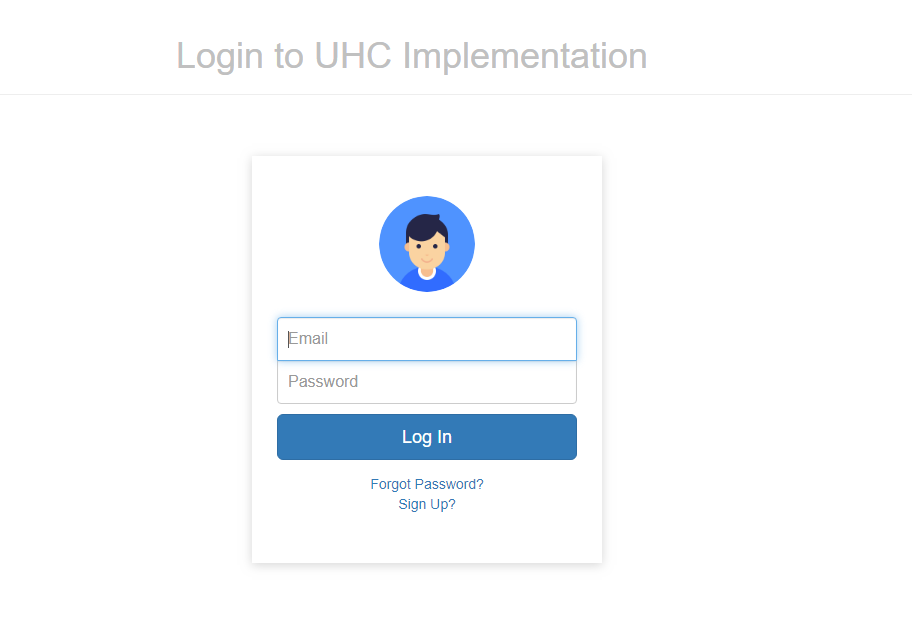
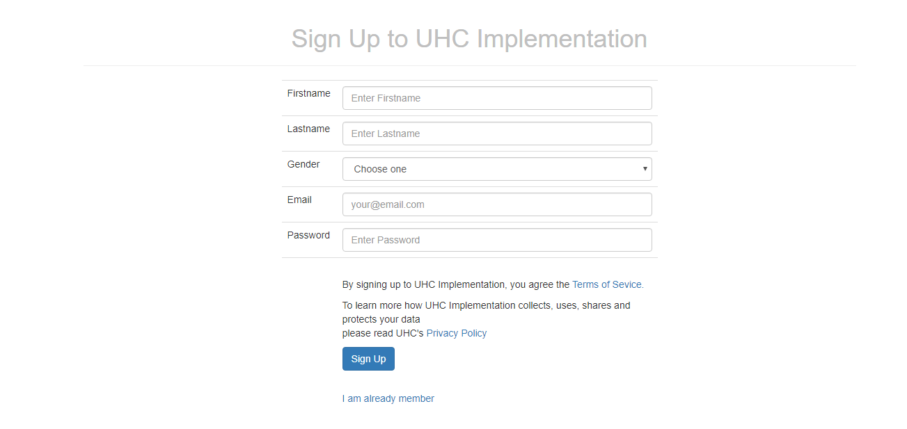
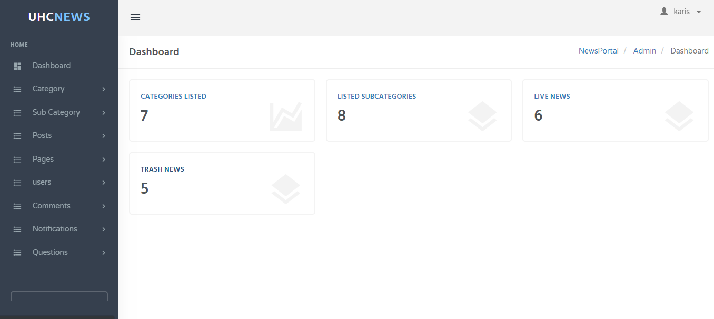
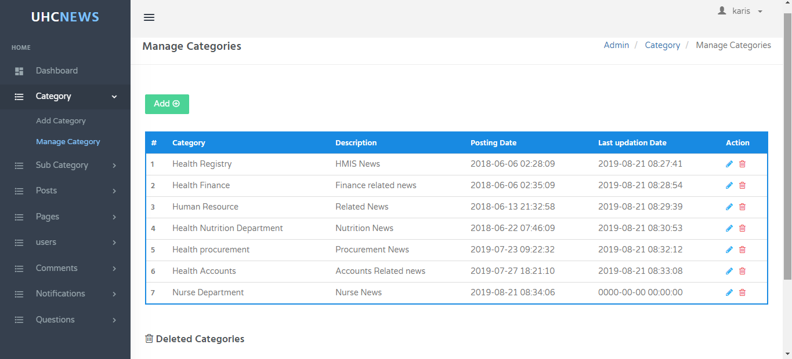
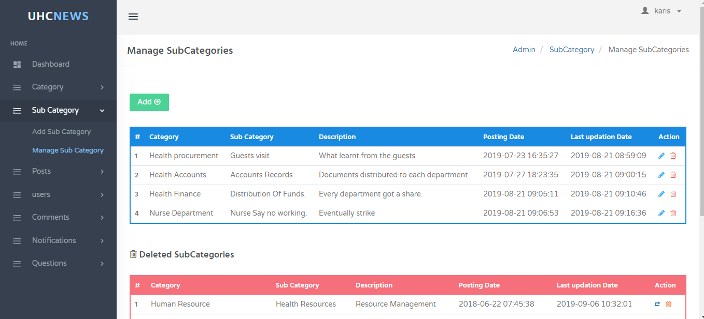
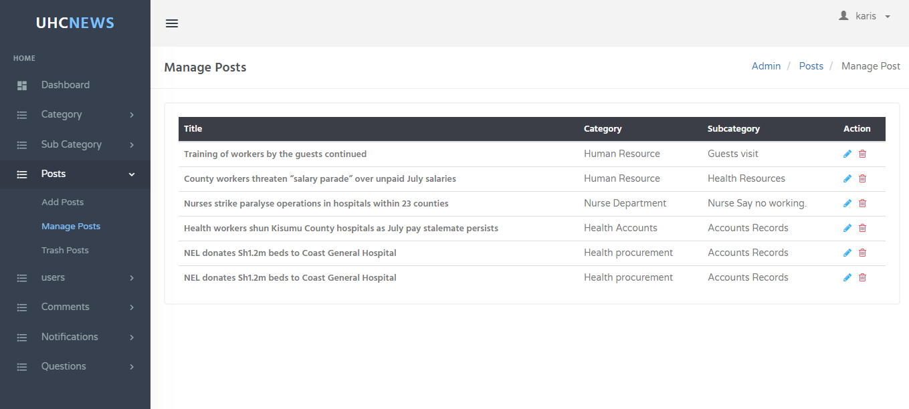
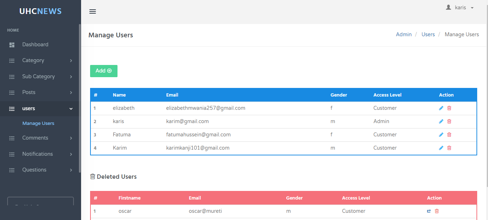
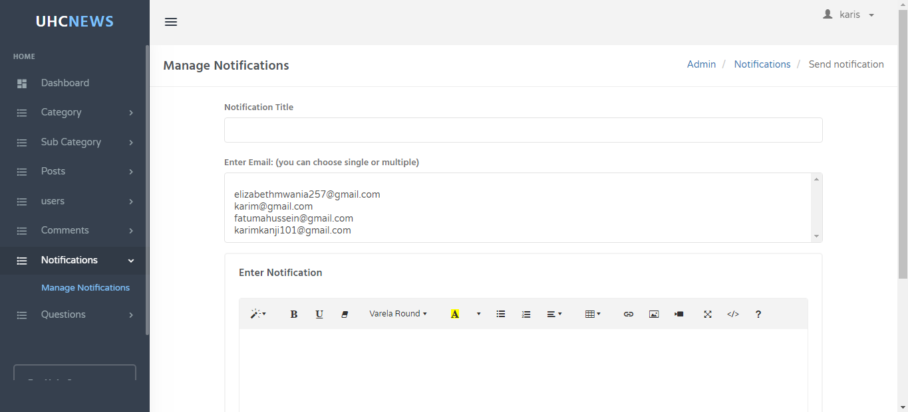
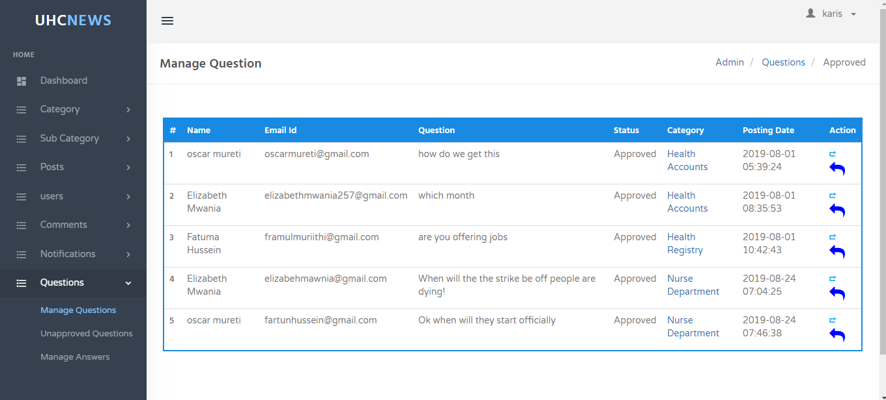
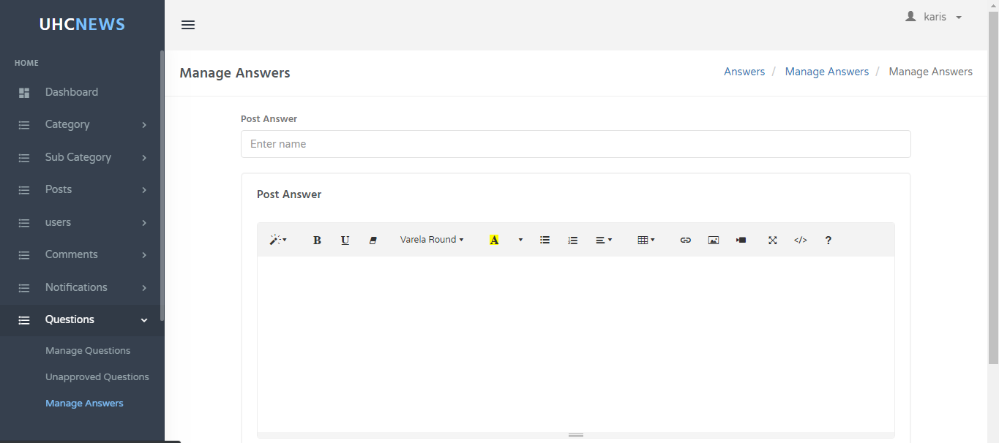

ADMIN GUIDE
1.0 Login page

If you have an account in uhc implementation, you will provide correct email and password. If you do not have account, you will click sign up
2.0 Registration page

If you are a new member to this site you will provide the above data then click sign up button. Then you will go back to log in page.
3.0 Home page

Once you log in as admin you will see above page, you can use left side menu or the image-like icons.
4.0 Categories management

You will be able to manage categories either by adding a new category, editing, deleting or restoring.
5.0 Subcategory management

You will be able to manage subcategories either by adding a new category, editing, deleting or restoring.
6.0 Post management

You will be able to manage posts either by adding a new category, editing, deleting or restoring.
7.0 User management

You will be able to create a new user, edit users data, remove user from using the site and and add or remove an admin
8.0 Notification management

You will be able to send notifications to an individual or to many users at once.
9.0 Question management

You will be able to approve or disapprove a question, delete or edit it.
10.0 Answer management

You will be able to post answer.